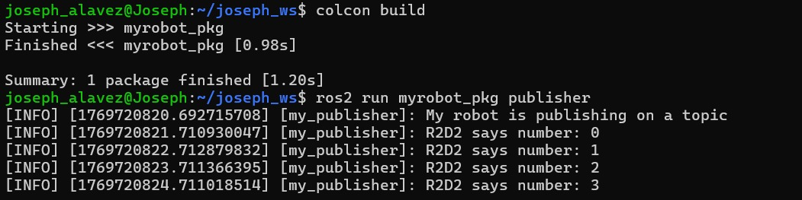
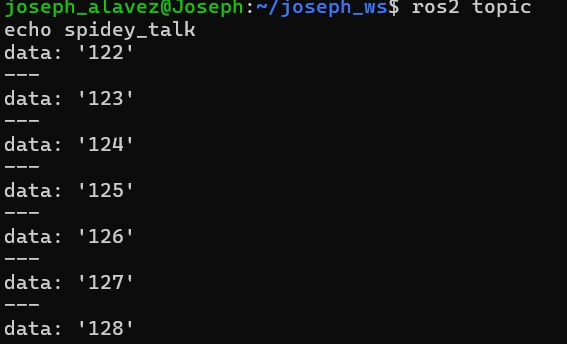
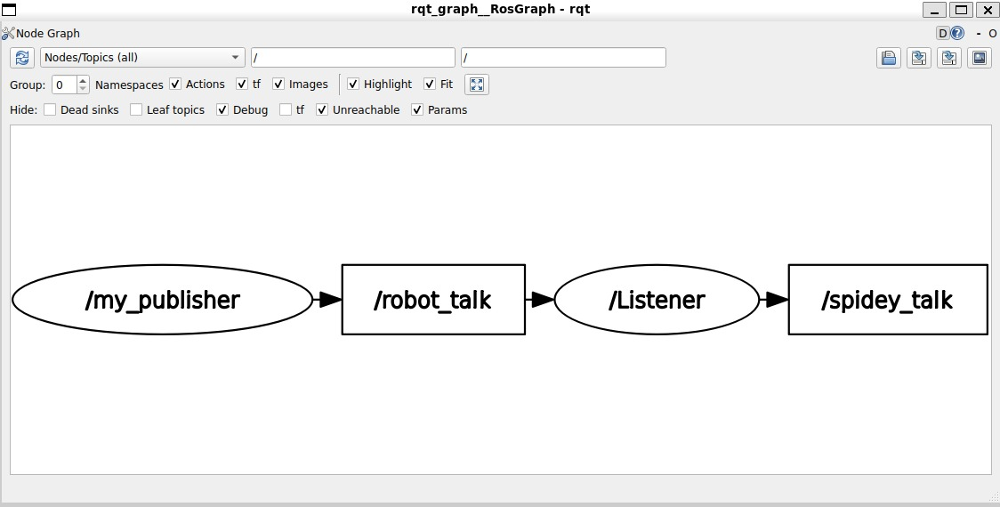
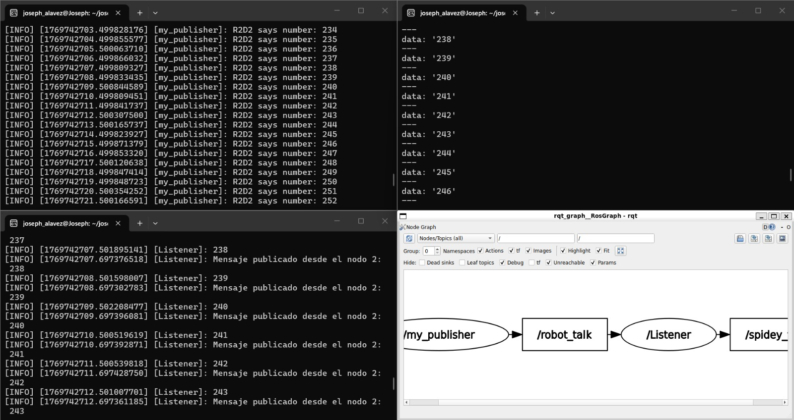

Activity 2: ROS2 Topics
Objective:
Create 2 nodes from scratch. In the first one you’ll have 1 publisher, and in the second one, 1 publisher & 1 subscriber.
-
The number_publisher node publishes a number (always the same) on the “/number” topic, with the existing type example_interfaces/msg/Int64.
-
The number_counter node subscribes to the “/number” topic. It keeps a counter variable. Every time a new number is received, it’s added to the counter. The node also has a publisher on the “/number_count” topic. When the counter is updated, the publisher directly publishes the new value on the topic.
A few hints: - Check what to put into the example_interfaces/msg/Int64 with the “ros2 interface show” command line tool. - It may be easier to do the activity in this order: first create the number_publisher node, check that the publisher is working with “ros2 topic”. Then create the number_counter, focus on the subscriber. And finally create the last publisher. - In the number_counter node, the publisher will publish messages directly from the subscriber callback.
1st code (1 publisher)
In this code we will create a node that it's only function is to be a publishers, this are nodes that publish messages on topics.
In this case our node is "my publisher", the topic is "robot_talk" (this important to remember despite we will use in the subscriber) that will publish 'R2D2 says number: {msg.data}, mesg.data will increment always 1 number until we interrupt the program.
#!/usr/bin/env python3
import rclpy
from rclpy.node import Node
from example_interfaces.msg import String
class myPublisher(Node):
def __init__(self):
super().__init__("my_publisher")
self.get_logger().info("My robot is publishing on a topic")
self.counter = 0
#(type, topic name, queue size)
self.publisher_ = self.create_publisher(String, "robot_talk", 10)
self.create_timer(1.0, self.talk)
def talk(self):
msg = String()
msg.data = str(self.counter)
self.get_logger().info(f'R2D2 says number: {msg.data}')
self.publisher_.publish(msg)
self.counter += 1
def main(args=None):
rclpy.init(args=args)
publisher_node= myPublisher()
rclpy.spin(publisher_node)
rclpy.shutdown()
if __name__ == "__main__":
main()
2nd code (1 subscriber and 1 publisher)
In this code we will have 2 functions the new one is the subscriber that are nodes that receive messages from publishers on topics they subscribe to.
Our subscriber and publisher node is called "Listener" for the subscriber we will use the "robot_talk" because is the name of the topic from the first node.
For our new publisher we will copy and paste the previous code modyfying the names of the variables (don't forget to change the topic name mine will be "spidey_talk") and adding a few more lines that are the key for the publisher to accomplish the objective.
The objective is "The node also has a publisher on the “/number_count” topic. When the counter is updated, the publisher directly publishes the new value on the topic." so for this we need to 3 new lines:
On the function "init" of the class to add the new message for the publisher
On the function of "callback_receive_info"to equal our previous to message to the new one, we add data so ros don't crash
self.mensaje_a_decir = msg_que_escucho.data #new to equal our previous to message to the new one, we add data so ros don't crash
self.get_logger().info("Mensaje publicado desde el nodo 2: " + msg_publicador.data) #new to see the information that is publishing the node "Listener" withput open a third terminal
#!/usr/bin/env python3
import rclpy
from rclpy.node import Node
from example_interfaces.msg import String
class mySubscriber(Node):
def __init__(self):
super().__init__("Listener")
self.subscriber = self.create_subscription(String,"robot_talk", self.callback_receive_info,10)
# type, topic name, callback function, queue size
self.publisher_ = self.create_publisher(String, "spidey_talk", 10) #vuelvo a rear nuevo publicador y cambio topic para no mezclar info
self.create_timer(1.0, self.talk)
self.mensaje_a_decir = ""
def callback_receive_info(self, msg_que_escucho: String): #its receiving a msg of type String
self.get_logger().info(msg_que_escucho.data) #print the data field
self.mensaje_a_decir = msg_que_escucho.data #pongo data porque sino explota
def talk(self):
msg_publicador = String()
msg_publicador.data = self.mensaje_a_decir
self.publisher_.publish(msg_publicador)
self.get_logger().info("Mensaje publicado desde el nodo 2: " + msg_publicador.data)
def main(args=None):
rclpy.init(args=args)
subscriber_node= mySubscriber()
rclpy.spin(subscriber_node)
rclpy.shutdown()
if __name__ == "__main__":
main()
Results
To see the results we will have to open a new terminal from "ubuntu" to work on ros.
After we will have to go to our carpets with cd and then install bash so ros works.
Then every time we make a change to our program we will use the next line to compile our codes: This are the main steps for ros to work after we will use the command "ros2 run" , followed by the name of your package and the name of your node to run the code or in this case the node we need to work. We will see this on the terminal.
We need to open a new terminal to see that the subscriber and the new publisher are working, we repeat the previus process to acces to our topic we just need to change the name of our node (my case subscriber)

We can see that ir prints both messages we wanted. We can also open a third terminal to see the messages that is sending our new publisher with the new topic, repeating again the same steps except for the last one, for this will use "topic echo" to see the message of the new publisher called "spider_talker".
Finally we can see the graph of the communication flow by writing the next on a necessary third terminal,
It'll automatically open a program to show the graph asked on the objectives.

Here are the four windows that shows all that was asked on the objectives.
